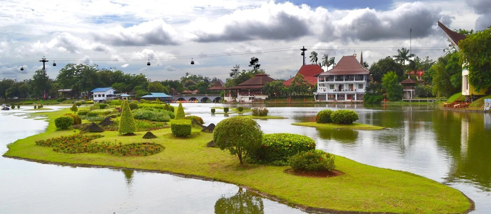
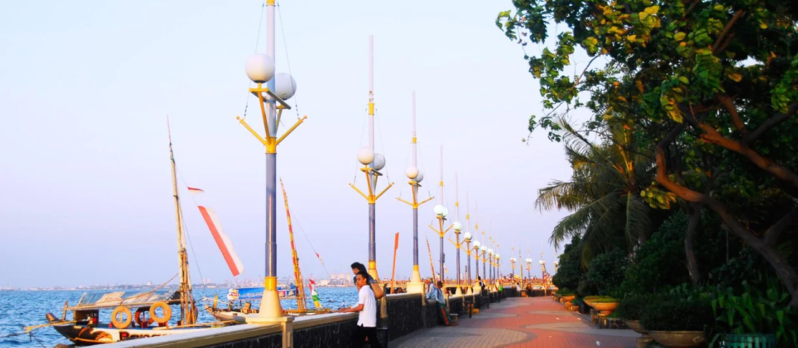

Wisata
Jakarta merupakan salah satu destinasi wisata yang cukup baik di Indonesia. Untuk meningkatkan jumlah wisatawan yang berkunjung ke Jakarta, pemerintah mengadakan program "Enjoy Jakarta". Beberapa tempat pariwisata yang terkenal dan biasa dikunjungi oleh para wisatawan lokal dan mancanegara di antaranya adalah Taman Mini Indonesia Indah, Taman Impian Jaya Ancol (termasuk taman bermain Dunia Fantasi dan Seaworld Indonesia). Disamping itu Jakarta juga memiliki banyak tempat wisata sejarah, yakni berupa museum dan tugu.
1. Taman Mini Indonesia Indah
Taman Mini Indonesia Indah (TMII) merupakan suatu kawasan taman wisata bertema budaya Indonesia di Jakarta Timur. Area seluas kurang lebih 150 hektare atau 1,5 kilometer persegi ini terletak pada koordinat 6°18′6.8″LS,106°53′47.2″BT. Taman ini merupakan rangkuman kebudayaan bangsa Indonesia, yang mencakup berbagai aspek kehidupan sehari-hari masyarakat 26 provinsi Indonesia (pada tahun 1975) yang ditampilkan dalam anjungan daerah berarsitektur tradisional, serta menampilkan aneka busana, tarian, dan tradisi daerah.
Di samping itu, di tengah-tengah TMII terdapat sebuah danau yang menggambarkan miniatur kepulauan Indonesia di tengahnya, kereta gantung, berbagai museum, dan Teater IMAX Keong Mas dan Teater Tanah Airku), berbagai sarana rekreasi ini menjadikan TMIII sebagai salah satu kawasan wisata terkemuka di ibu kota.
2. Taman Impian Jaya Ancol
Taman Impian Jaya Ancol merupakan sebuah objek wisata di bumi sari natar Jakarta Utara. Sebagai komunitas pembaharuan kehidupan masyarakat yang menjadi kebanggaan bangsa. Senantiasa menciptakan lingkungan sosial yang lebih baik melalui sajian hiburan berkualitas yang berunsur seni, budaya dan pengetahuan, dalam rangka mewujudkan komunitas 'Life Re-Creation' yang menjadi kebanggaan bangsa.
Setiap kawasan taman hiburan memiliki tema dan keseruan yang berbeda yang bakal memanjakan hari libur Anda. Misalnya seperti Dunia Fantasi atau yang kerap disebut Dufan, Seaworld, Atlantis Water Adventure, Ocean Dream Samudra, serta masih banyak lagi wahana seru lainnya yang mengagumkan.
3. Kota Tua

Di sudut kota metropolitan Jakarta ada satu kawasan yang menyimpan nilai historis tinggi tetapi juga jadi tempat wisata hits, Kota Tua namanya. Banyaknya gedung-gedung tua bergaya kolonial yang masih kokoh berdiri memberikan nuansa seolah kembali ke masa lampau. Karenanya Tak heran jika hari libur atau akhir pekan tiba, kawasan ini selalu ramai dipadati pengunjung.
Saat mengunjungi tempat wisata di Jakarta yang satu ini, ada banyak hal yang bisa Anda jelajahi. Ada Museum Fatahilah yang jadi saksi sejarah perjuangan bangsa untuk meraih kemerdekaan. Lalu ada Gedung Merah, Museum Wayang, Museum Bank Indonesia, Museum Bahari, Pelabuhan Sunda Kelapa hingga Stasiun Kereta Api Kota.